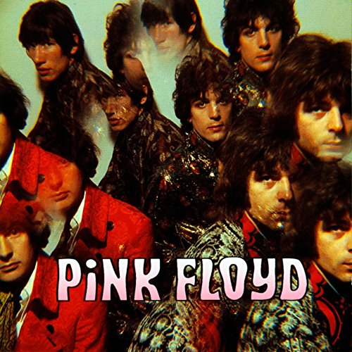
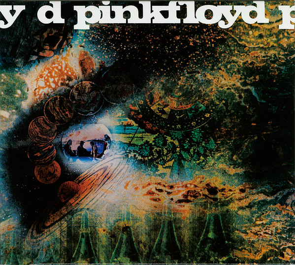
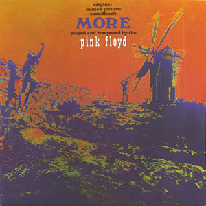
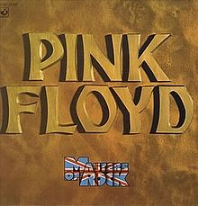
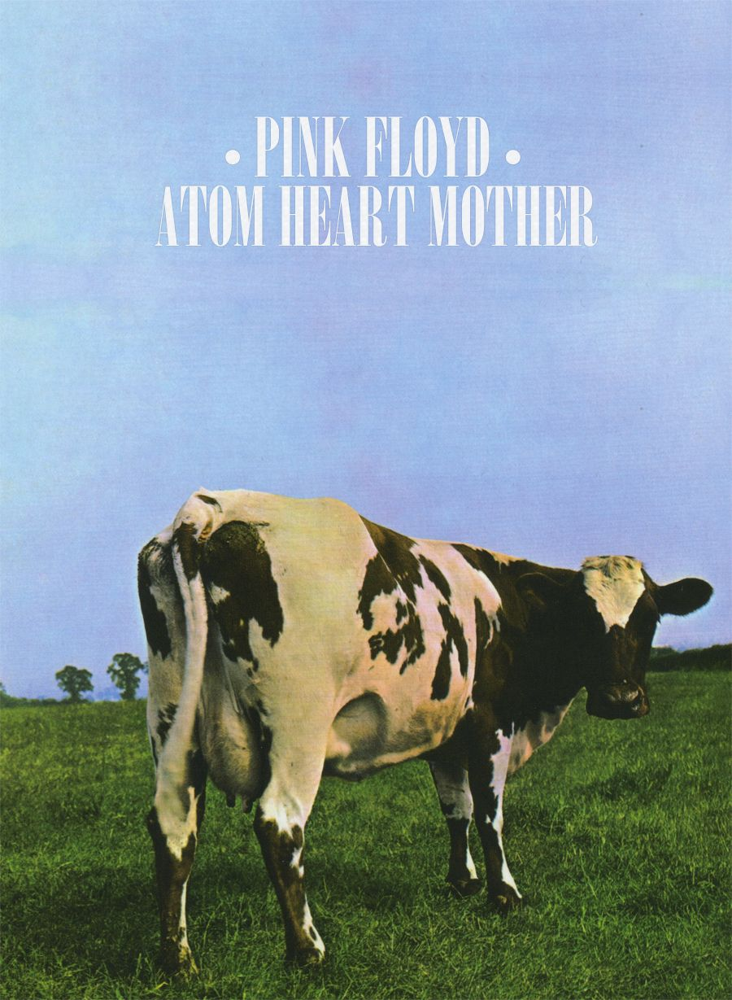
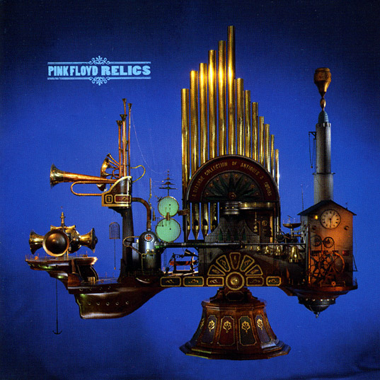
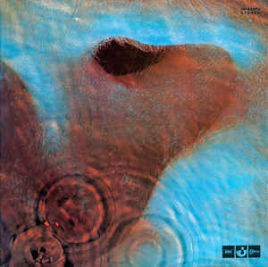
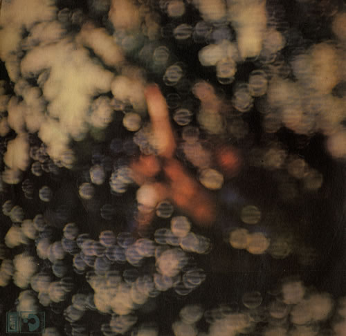
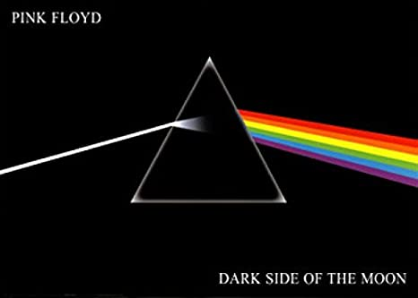
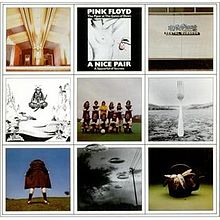

Discography
Througout their music career, Pink Floyd has created a large number of albums. which
earned them fame and popularity since their formation. From 1967 to 1973, they have created
15 dtudio albums, 3 live albums, 9 compilation albums, 5 box sets, 6 extended plays and 27 singles.
The Piper at the Gates of Dawn (August, 1967)

The Piper at the Gates of Dawn Album Art
A Saucerful of Secrets (June, 1968)

A Saucerful of Secrets Album Art
More (June, 1969)

More Album Art
Ummagumma (October, 1969)
Ummagumma Album Art
The Best Of The Pink Floyd (July, 1970)

The Best Of The Pink Floyd Album Art
Atom Heart Mother (October, 1970)

Atom Heart Mother Album Art
Relics (May, 1971)

Relics Album Art
Meddle (October, 1971)

Meddle Album Art
Obsecured Clouds (June, 1972)

Obsecured Clouds Album Art
The Dark Side Of The Moon (March, 1973)

The Dark Side Of The Moon Album Art
A Nice Pair (December, 1973)

A Nice Pair Album Art
Wish You Were Here (September, 1975)
Wish You Were Here Album Art
Animals (January, 1977)
Animals Album Art
The Wall (September, 1975)
The Wall Album Art